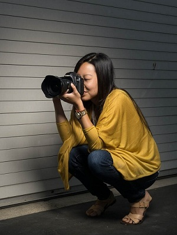

This may be a topic that seems basic and easy to gloss over, but have you ever thought about to properly hold your camera? Sure, DSLRs have been designed to give you better and better ergonomics and grip, but when you start shooting with slow shutter speeds or telephoto lenses with no vibration compensation, having the right technique can be the difference between a photo that looks sharp and a photo that has shaky motion blurs.
Some of these technique may feel weird, but think of it like learning to play golf. It doesn’t always feel right, but the results will speak for themselves.
Tip 1. Tuck the Arms When Standing
INCORRECT: One of the most common mistakes in holding a camera is to have the elbows out to the side, which makes it easier for your arm to sway around. This also makes your left hand hold the lens from the side, which provide less support for the camera, especially when you have larger and longer lenses attached.
CORRECT: Tuck in your elbow to your body so that your arms are anchored to your torso’s center of gravity. This helps keep your arms from swaying and also allows you to move your left hand under the lens to give it more support. It does feel weird at first to hold it like this, but you will be able to shoot at much slower shutter speeds without noticing camera shake. As for your posture, be sure to stand up straight without leaning forward or backwards with your legs apart in a comfortable, but stable stance. All of this applies when you’re shooting in portrait mode.
Tip 2. Brace Yourself Against a Stable Object
If you are using a really slow shutter and you are still getting some shakiness in the image, try to find a wall (or something else that is stable) to support and stabilize your upper body.
Tip 3. Brace Your Camera On Your Arm
If you cannot find a wall, this is another standing technique can give you that extra stability. What you do is bring your left arm around the right arm and hold on tight to your right shoulder. This restricts motion in your right hand. Next, by placing your camera on the upper part of your left arm, you now have a more stable base. Time your breathing as well by holding your breath while taking your shot.
Of course, the disadvantage of this technique is that you can’t zoom or focus with the lens, so be sure to set that up first or use your camera’s focus points.
Tip 4. Place Your Feet Flat-Footed
INCORRECT: If you have to crouch to get a low perspective, there is a big difference in stability between the two popular ways of crouching. The first one, where you are on the ball of your feet, is inherently unstable and will transfer motion to your camera.

CORRECT: Plant your feet so you are crouching flat footed, then tuck the elbows in either on or between your knees.
Tip 5. Sit With Your Elbows On Your Knees
INCORRECT: Sitting down is generally the better choice when you have to shoot from a low perspective. But even while sitting, there still methods we can use to improve stability. If you are just sitting with your legs out or legs crossed, your torso and your arms are essentially still free-standing with minimal support.
CORRECT: While sitting, place your feet on the ground with your knees propped up. Place each elbow on each side of the knee using your knees as a brace. If you think about it, you are essentially acting like a human tripod. When Post Production Pye does this move)